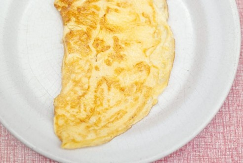
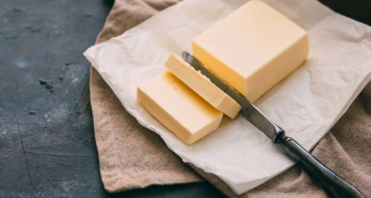

Omlette recipe

Ingredients

- Egg
- Cooking Oil

- Butter
Recipe
- Beat the egg lightly with a fork.
- Melt the butter over medium-low heat, and keep the temperature low and slow when cooking the eggs so the bottom doesn’t get too brown or overcooked.
- Let the egg sit for a minute, then use a heatproof silicone spatula to gently lift the cooked eggs from the edges of the pan. Tilt the pan to allow the uncooked egg to flow to the edge of the pan.
- Fold the omelette in half. Slide it onto a plate with the help of a silicone spatula.
Link for more details
Copyright © Mike S.